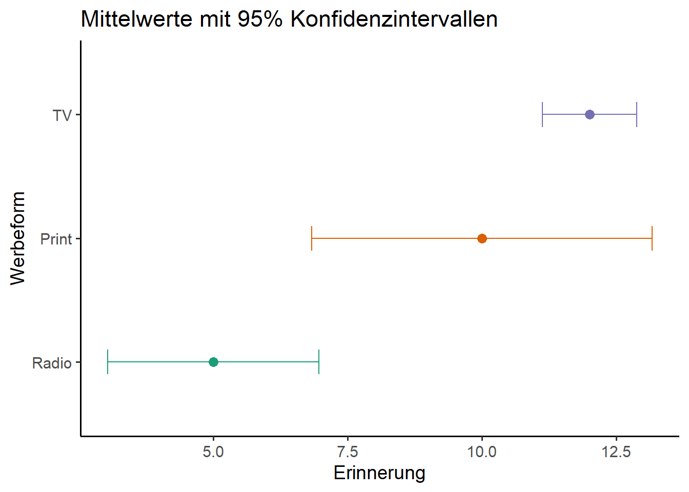

# Arbeitsverzeichnis checken
getwd()[1] "C:/Users/antje/Documents/studium PUK/Master-Publizistik/STUDIENASSISTENZ/Test Tutorial"Diese Übung gibt eine Einführung in die Varianzanalyse (ANOVA), mit der wir Mittelwertunterschiede zwischen mehr als zwei Gruppen untersuchen. Sie lernen, wie man
Wie immer prüfen wir zunächst mit “getwd()”, unter welchem Pfad unser Arbeitsverzeichnis abgelegt ist. Alle Skripte und Datensätze, mit denen wir arbeiten wollen, sollten in diesem Ordner abgelegt sein.
# Arbeitsverzeichnis checken
getwd()[1] "C:/Users/antje/Documents/studium PUK/Master-Publizistik/STUDIENASSISTENZ/Test Tutorial"Im Folgenden benötigen wir wieder einige Pakete, die nicht bereits in der Basisversion enthalten sind und installieren/laden diese mit dem Paket “pacman”, welches wir bereits in Übung 2 (t-Test) installiert haben.
# Pakete installieren und laden
if (!require("pacman")) {install.packages("pacman"); library(pacman)}Lade nötiges Paket: pacmanp_load(mosaic, knitr, tidyverse, effectsize, broom, car)Der nächste Schritt ist wieder das Einlesen der Daten. Für unsere erste Varianzanalyse verwenden wir einen fiktiven Datensatz zu einem Experiment, bei dem verschiedenen Gruppen von Proband:innen Werbebotschaften entweder als Radio-, Print- oder TV-Werbung präsentiert wurden. Anschließend wurde erfasst, an wie viele Werbebotschaften die Proband:innen sich erinnern. Laden Sie diesen Datensatz aus dem entsprechenden Ordner in Moodle und legen Sie ihn in Ihr Arbeitsverzeichnis.
Achtung!: In diesem Fall sind die Werte nicht mit Komma, sondern Semikolon getrennt. Das sehen wir, wenn wir den Datensatz zunächst mit einem einfachen Dateneditor öffnen. Deshalb verwenden wir zusätzlich das Argument “sep”, mit dem wir das Trennungszeichen festlegen können, wenn es von der Voreinstellung (Komma) abweicht.
# Datensatz laden
df <- read.csv("data/Werbeformen.csv", sep = ";")
# Datensatz inspizieren
glimpse(df)Rows: 15
Columns: 2
$ werbeform <int> 1, 1, 1, 1, 1, 2, 2, 2, 2, 2, 3, 3, 3, 3, 3
$ erinnerung <int> 5, 7, 3, 4, 6, 12, 7, 8, 10, 13, 12, 11, 12, 12, 13class(df)[1] "data.frame"head(df) werbeform erinnerung
1 1 5
2 1 7
3 1 3
4 1 4
5 1 6
6 2 12Mit der Funktion “View” können wir uns den Datensatz in einem separaten Fenster anschauen.
#Viewer öffnen
View(df)Wir möchten prüfen, ob sich die Erinnerungsleistung der Proband:innen je nach Werbeform signifikant unterscheidet. Die Variable “werbeform” ist also unsere unabhängige Variable (UV). Diese definieren wir mit der Funktion “factor” als Faktor. Die Argumente “levels” und “labels” verwenden wir, um die drei Faktorstufen mit ihren zugehörigen Bezeichungen zu speichern. Der Wert 1 wird damit dem Label Radio, der Wert 2 dem Label Print und der Wert 3 dem Label TV zugeordnet.
Dann definieren wir die Variable “erinnerung” als abhängige Variable. Wie beim t-Test muss das Skalenniveua der UV nominal und das Skalenniveu der AV metrisch sein. Wir prüfen mit glimpse(), ob dies der Fall ist.
#Unabhängige und abhängige Variablen definieren
df$uv <- factor(df$werbeform,
levels = c (1,2,3),
labels = c("Radio", "Print", "TV"))
#die AV ist schon numerisch, daher bennen wir sie nur um
df$av <- df$erinnerung
glimpse(df)Rows: 15
Columns: 4
$ werbeform <int> 1, 1, 1, 1, 1, 2, 2, 2, 2, 2, 3, 3, 3, 3, 3
$ erinnerung <int> 5, 7, 3, 4, 6, 12, 7, 8, 10, 13, 12, 11, 12, 12, 13
$ uv <fct> Radio, Radio, Radio, Radio, Radio, Print, Print, Print, Pri…
$ av <int> 5, 7, 3, 4, 6, 12, 7, 8, 10, 13, 12, 11, 12, 12, 13Voraussetzung 1 erfüllt: UV ist nominal mit mindestens 3 Kategorien!
Voraussetzung 2 erfüllt: AV is metrisch!
Nun lassen wir uns zunächst mit der Funktion “favstats” die wichtigsten deskriptiven Statistiken ausgeben.
# Label an UV vergeben für die Tabelle
label_uv <- "Werbeform"
# Deskriptive Statistiken berechnen
des_stat <- favstats(df$av ~ df$uv)
# Tabelle erstellen
kable(des_stat,
col.names = c(label_uv,"Minimum", "1.Quartil",
"Median", "3.Quartil", "Maximum",
"M", "SD", "N", "Fehlend" ),
digits = 2)| Werbeform | Minimum | 1.Quartil | Median | 3.Quartil | Maximum | M | SD | N | Fehlend |
|---|---|---|---|---|---|---|---|---|---|
| Radio | 3 | 4 | 5 | 6 | 7 | 5 | 1.58 | 5 | 0 |
| 7 | 8 | 10 | 12 | 13 | 10 | 2.55 | 5 | 0 | |
| TV | 11 | 12 | 12 | 12 | 13 | 12 | 0.71 | 5 | 0 |
Wir sehen, dass Radiowerbung durchschnittlich deutlich weniger erinnert wird als Print- oder TV-Werbung. Zudem wird TV-Werbung noch etwas besser als Print-Werbung erinnert. Das bedeutet aber noch nicht, dass diese Unterschiede auch statistisch signifikant sind. Es könnte ja sein, dass wir diese Unterschiede nur zufällig in unserer Stichprobe messen, es in Wahrheit aber gar keine Unterschiede gibt (Nullhypothese). Um dies zu prüfen, führen wir unten eine einfaktorielle Varianzanalyse durch. Im Gegensatz zum t-Test können wir hier Mittelwerte von mehr als zwei Gruppen gleichzeitig testen.
Mit dem hier folgenden Code visualisieren wir zunächst einmal die Mittelwerte und die zugrundeliegenden Verteilungen der drei Gruppen:
mittel_gesamt <- mean(df$av, na.rm = TRUE)
mittel_gruppen <- df %>%
group_by(uv) %>%
summarise(m_k = mean(av, na.rm = TRUE))
df%>%
ggplot(aes(x = av, fill = uv)) +
geom_density(alpha = 0.5) +
labs(x = "Erinnerung",
y = "Dichte") +
geom_vline(xintercept = mittel_gesamt,
color = "black",
linetype = "dashed",
linewidth=1,
alpha=0.5,
show.legend=FALSE) +
annotate("text", x = mittel_gesamt, y = Inf,
label = "Gesamtmittelwert",
color = "black",
alpha=0.7,
vjust = -0.5, hjust = 1,
angle = 90,
size = 4) +
geom_vline(data = mittel_gruppen,
aes(xintercept = m_k,
color = uv),
linetype = "dotted",
linewidth = 1,
show.legend=FALSE) +
theme_classic(base_size=14) +
theme(legend.position = "top")+
scale_fill_discrete(name = NULL)
Wie beim t-Test müssen wir zunächst prüfen, ob die Voraussetzung der Varianzhomogenität vorliegt. Hierzu verwenden wir wieder den Levene-Test, mit dem wir prüfen, ob sich die Varianzen in den drei Gruppen (Radio, Print, TV) signifikant unterscheiden. Wird dieser Test signifikant, dürfen wir KEINE Varianzhomogenität annehmen, d.h. die Varianzen unterscheiden sich signifikant zwischen den Gruppen. In diesem Fall liegt Varianzheterogenität vor. Um dies zu prüfen, führen wir den Levene-Test durch. Das Vorgehen und der Code entsprechen genau dem in Übung 2: Wir rufen den Datensatz “df” auf, entfernen alle Fälle mit fehlenden Werten und führen dann den Levene-Test für unsere AV und UV durch.
df %>%
drop_na(uv, av) %>%
leveneTest(av~uv, data = .)Levene's Test for Homogeneity of Variance (center = median)
Df F value Pr(>F)
group 2 3.84 0.0514 .
12
---
Signif. codes: 0 '***' 0.001 '**' 0.01 '*' 0.05 '.' 0.1 ' ' 1Wir haben Glück. Der Levene-Test ist in unserem Fall gerade nicht signifikant (F(2,12) = 3.84, p = 0.0514), denn p > 0.05. Somit können wir die Nullhypothese beibehalten, von Varianzhomogenität ausgehen und mit der Varianzanalyse fortfahren.
Wird der Levene-Test signifikant, sollten wir wieder den robusteren Welch-Test durchführen (siehe unten).
Voraussetzung 3 erfüllt: Ähnliche Varianzen in allen Gruppen!
Zunächst entfernen wir wieder mit der Funktion “drop_na” Fälle mit fehlenden Werten, damit die Mittelwerte berechnet werden können (falls notwendig). Für die einfaktorielle Varianzanalyse selbst verwenden wir die Funktion “aov” (aus dem Standardpaket “stats”). Mit dieser Funktion wird ein F-Test berechnet, dessen Informationen wir in einem eigenen Objekt speichern. Wir bezeichnen es mit “model”. Mit der “summary”-Funktion lassen wir uns das Ergebnis anzeigen.
Mit dem F-Test prüfen wir, ob sich mindestens zwei der Gruppenmittelwerte signifikant voneinander unterscheiden. Die Hypothese, die wir testen, ist also ungerichtet:
H1: Die Werbeform hat einen signifikanten Einfluss auf die Erinnerungsleistung.
H0: Die Werbeform hat keinen Einfluss auf die Erinnerungsleistung.
df <- drop_na(df, uv, av)
model <- aov(av~uv, data = df)
summary(model) Df Sum Sq Mean Sq F value Pr(>F)
uv 2 130 65.00 20.53 0.000134 ***
Residuals 12 38 3.17
---
Signif. codes: 0 '***' 0.001 '**' 0.01 '*' 0.05 '.' 0.1 ' ' 1Erklärung
Im Output wird eine Tabelle mit zwei Zeilen angezeigt: uv und Residuals. Es werden jeweils Freiheitsgrade (Df), Quadratsummen (Sum Sq; SAQ), Mittlere Abweichungsquadrate (Mean Sq; MAQ), F-Werte (F value) sowie p-Werte (Pr) angezeigt. Die Werte in der ersten Zeile (UV) beziehen sich auf die Varianz zwischen den Faktorstufen, also die Varianz, die durch die Gruppenzugehörigkeit (die UV) erklärt werden kann (erklärte Varianz). Die Werte in der zweiten Zeile (Residuals) beziehen sich auf die Varianz innerhalb der Gruppen bzw. Faktorstufen, also die Varianz, die nicht durch die UV erklärt werden kann (nicht erklärte Varianz). Wir sehen, dass die Quadratsummen (Sum Sq) und die mittleren Abweichungsquadrate (Mean Sq) der UV sehr viel größer sind als die der Residuen. Die erklärte Varianz übersteigt die nicht erklärte Varianz um ein Vielfaches.
Die wichtigsten Werte für die Interpretation der ANOVA sind der F-Wert und der p-Wert, aus denen wir ablesen, ob der Unterschied in den mittleren Abweichungsquadraten signifikant ist. Der F-Wert setzt die erklärte und nicht erklärte Varianz zueinander ins Verhältnis. Er beträgt in unserem Beispiel 20.53 bei einem p-Wert von 0.000134. Der p-Wert ist also deutlich kleiner als unser angestrebtes Signifikanzniveau von p < 0.05. Die drei Sterne *** hinter dem p-Wert bedeuten, dass das Ergebnis sogar höchst signifikant ist, also p < 0.001 (siehe Legende unter der Tabelle); ** bedeuten hoch signifikant mit p < 0.01; * steht für signifikant mit p < 0.05.
Wir können aus den Ergebnissen also schließen, dass die Werbeform einen signifikanten Einfluss auf die Erinnerungsleistung hat, sich also mindestens zwei Gruppenmittelwerte signifikant voneinander unterscheiden. Wir wissen aber nicht, welche der Mittelwerte das sind.
Wir berichten das Ergebnis wie folgt: Die Erinnerungsleistung (gemessen durch die Zahl der erinnerten Werbebotschaften) unterschied sich statistisch höchst signifikant nach der Werbeform, F(2,12) = 20.53, p < .001.
Exkurs: Welch’s F: Bei signifikantem Levene-Test, d.h. wenn die Voraussetzung der Varianzhomogenität verletzt wird, berechnen wir einen F-Wert nach Welch. Hierzu verwenden wir die Funktion “oneway.test()”, in der standardmäßig der robustere F-Wert nach Welch berechnet wird. Anstatt des Code-Chunks oben verwenden wir also den hier folgenden Code.
df <- drop_na(df, uv, av)
oneway.test(av~uv, data = df)
One-way analysis of means (not assuming equal variances)
data: av and uv
F = 37.262, num df = 2.0000, denom df = 6.4983, p-value = 0.0002752Um genauer zu analysieren, wie viele und welche der Mittelwerte sich signifikant voneinander unterscheiden, führen wir sogenannte Post-Hoc-Tests durch. Damit werden die Mittelwerte paarweise mittels t-Tests miteinander verglichen werden. Mit dem Argument p.adj = “bonf” wählen wir die Bonferroni-Korrekturmethode (korrigiert mit Anzahl der Vergleiche).
df %>%
drop_na(uv, av) %>%
do(tidy(pairwise.t.test(.$av, .$uv, p.adj = "bonferroni")))# A tibble: 3 × 3
group1 group2 p.value
<chr> <chr> <dbl>
1 Print Radio 0.00241
2 TV Radio 0.000134
3 TV Print 0.303 In der Ergebnistabelle können wir ablesen, dass der Unterschied zwischen Print und Radio signifkant ist (p = 0.0024 und damit p < 0.05). Ebenso ist der Unterschied zwischen TV und Radio signifikant (p = 0.00013 und damit p < 0.05). Der Unterschied zwischen TV und Print ist hingegen nicht signifikant.
Gemeinsam mit den oben berechneten deskriptiven Statistiken können wir nun also zusammenfassen, dass Radiowerbung zu einer signifikant schlechteren Erinnerung (M = 5, SD = 1.58) der Werbebotschaften als Print- (M = 10, SD = 2.55) und TV-Werbung (M = 12, SD = 0.71) führt. TV-Werbung wird nicht besser als Printwerbung erinnert.
Die Erinnerungsleistung (gemessen durch die Zahl der erinnerten Werbebotschaften) unterschied sich statistisch höchst signifikant nach der Werbeform, F(2,12) = 20.53, p < .001. Proband:innen, die Radiowerbung ausgesetzt werden, haben eine signifikant schlechtere Erinnerung an die Werbung (M = 5, SD = 1.58) im Vergleich zu Werbebotschaften als Print- (M = 10, SD = 2.55, p < .05) und TV-Werbung (M = 12, SD = 0.71, p < .05). TV-Werbung wird nicht besser als Printwerbung erinnert.
Beispiele der Visualisierung:
df %>%
ggplot(aes(x = uv, y = av, fill = uv)) +
geom_boxplot(width=0.7, outlier.shape = NA) +
geom_jitter(width = 0.2,
alpha = 0.5) +
labs(x = "Werbeform",
y = "Erinnerung") +
geom_hline(yintercept = mittel_gesamt,
color = "black",
alpha= 0.5,
linetype = "dashed",
linewidth=1) +
theme_classic(base_size = 14) +
theme(legend.position = "none")
Weil die Abweichung vom Mittelwert in der Gruppe TV sehr klein ist (die Beobachtungen haben einen sehr ähnlichen Wert), wird der Boxplot hier nicht richtig angezeigt.
df %>%
ggplot(aes(x = uv, y = av, fill = uv)) +
geom_violin() +
geom_jitter(width = 0.2,
alpha = 0.5) +
labs(x = "Werbeform",
y = "Erinnerung") +
geom_hline(yintercept = mittel_gesamt,
color = "black",
alpha= 0.5,
linetype = "dashed",
linewidth = 1) +
theme_classic(base_size = 14) +
theme(legend.position = "none")
colors_blind <- c("#1b9e77", "#d95f02", "#7570b3")
summary_df <- df %>%
group_by(uv) %>%
summarise(
mean_av = mean(av, na.rm = TRUE),
ci_lower = mean_av - qt(0.975, df = n() - 1) * sd(av, na.rm = TRUE) / sqrt(n()),
ci_upper = mean_av + qt(0.975, df = n() - 1) * sd(av, na.rm = TRUE) / sqrt(n())
)
summary_df %>%
ggplot(aes(y = uv,
x = mean_av,
color=uv)
) +
geom_point(size = 3, color=colors_blind) +
geom_errorbar(aes(xmin = ci_lower,
xmax = ci_upper),
width = 0.2,
color=colors_blind) +
labs(y = "Werbeform",
x = "Erinnerung",
title = "Mittelwerte mit 95% Konfidenzintervallen") +
theme_classic(base_size = 14) +
theme(legend.position = "none")
Dieses Skript folgt in weiten Teilen Kapitel 12.5 in: Gehrau, V., Maubach, K., Fujarski, S. (2022). Einfache Datenauswertung mit R.
Jetzt sind Sie dran! Prüfen Sie anhand des Netflix-Datensatzes aus Übung 2, ob die Nutzerbewertung vom Genre abhängt. Prüfen Sie dies für die Genres Drama, Komödie und Thriller.
#Datensatz einlesen
#Fälle auswählen und in Dataframe speichern#UV und AV definieren; UV dabei als Faktor speichernAntwort:
#Test durchführenAntwort: …
Antwort: …
#Varianzanalyse durchführenAntwort: …
#Post-Hoc-Tests durchführenTipp! Sie müssen den Code nicht komplett selbst eintippen. Suchen Sie die entsprechenden Code-Chunks oben (oder aus vorherigen Übungen) und übertragen Sie diese per Copy-Paste in die Platzhalter-Code-Chunks. In der Regel müssen Sie nur die Variablennamen und ggf. weitere Parameter anpassen. Bitte fügen Sie auch nur die Befehle und Berechnungen an, die jeweils in der Aufgabenstellung gefragt sind, d.h. löschen Sie Befehle, die nicht zur Aufgabenstellung gehören.
Wichtig! Speichern Sie das angepasste Markdown mit einem Dateinamen nach dem folgenden Muster: Nachname_Übung3.Rmd Laden Sie diese Datei in den dafür vorgesehenen Ordner in Moodle.